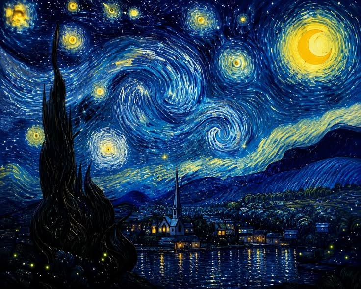

Mi página web estará dedicada a la pintura
La pintura es una forma de arte que utiliza colores, formas y diferentes materiales para representar ideas, emociones o imágenes. Existen diferentes técnicas como acuarela, óleo y acrílico.
lo ejegi porque me gusta pintar me siento muy bien y me divierto haciendolo desde que estaba chiquita
La pintura es importante para mi porque permite desarrollar la imaginación y expresar lo que pensamos o sentimos de una manera artística.

Vincent van Gogh pintó "La noche estrellada" en junio de 1889 desde la ventana de su habitación en el asilo de Saint-Paul-de-Mausole en Saint-Rémy-de-Provence inspirándose en la vista poco antes del amanecer
A pesar de ser una representación nocturna, el cuadro fue elaborado completamente de día usando su memoria e imaginación y la brillante estrella matutina que pintó junto al ciprés era en realidad el planeta Venus
En mi opinión, "La noche estrellada" es una obra maestra impresionante porque logra transmitir una intensa carga emocional a través de sus trazos ondulantes y vibrantes colores, transformando un cielo nocturno en una expresión viva del mundo interior del artista.